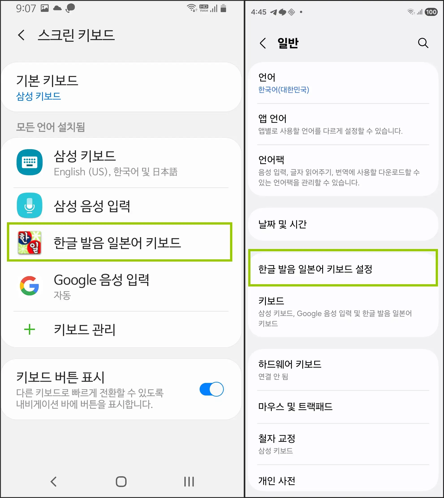
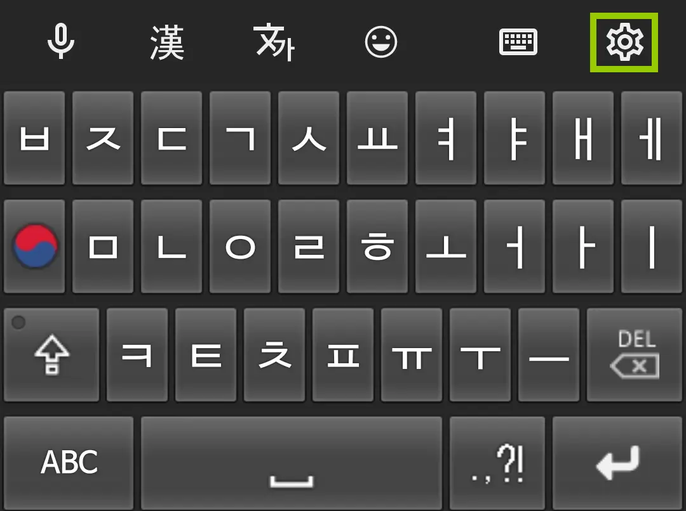
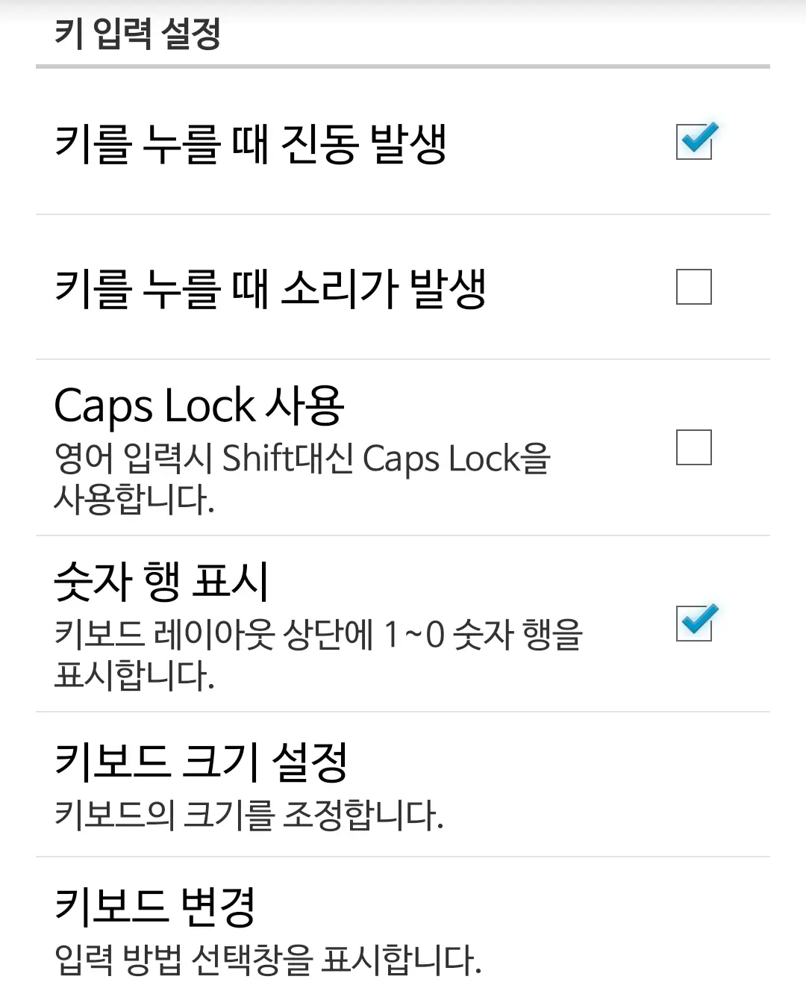
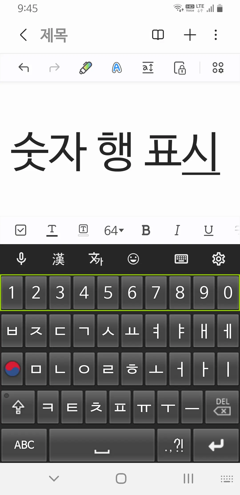
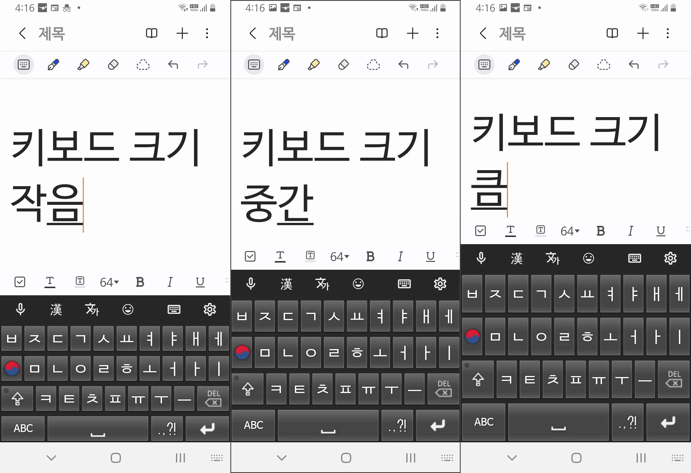
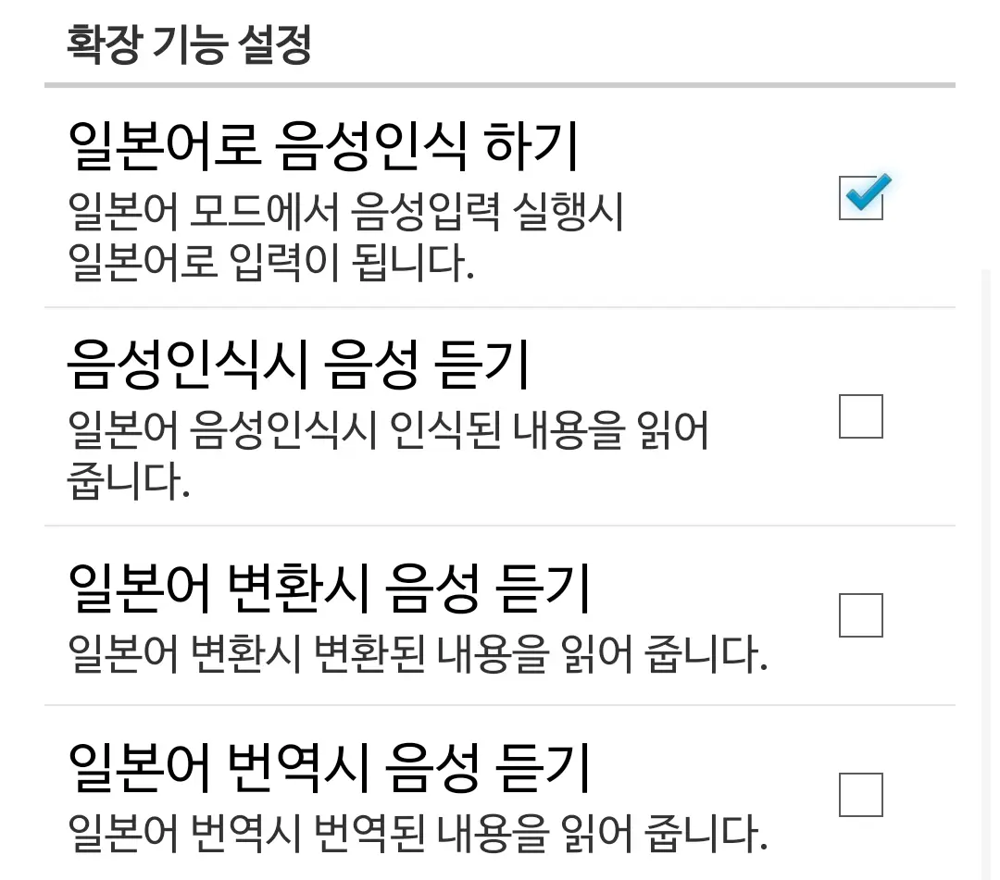
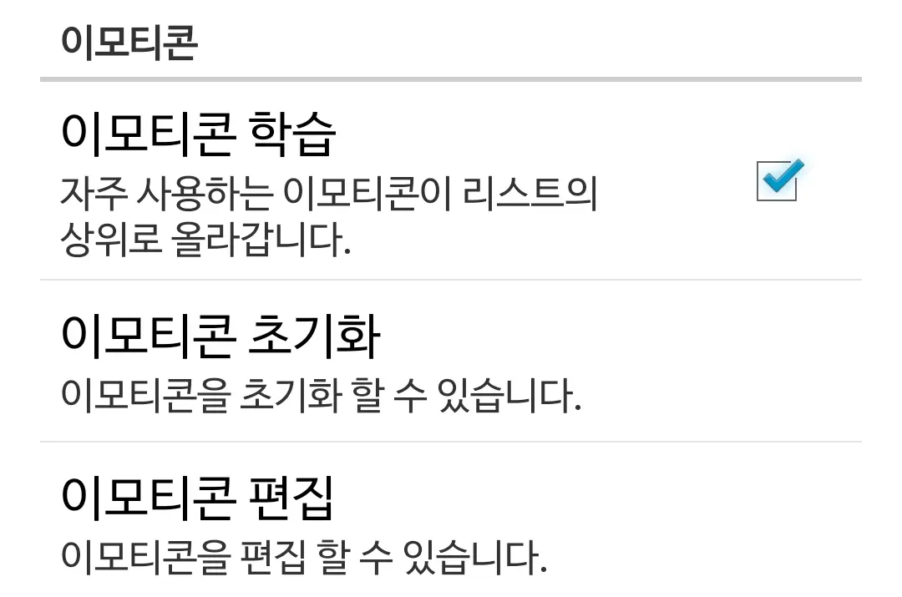
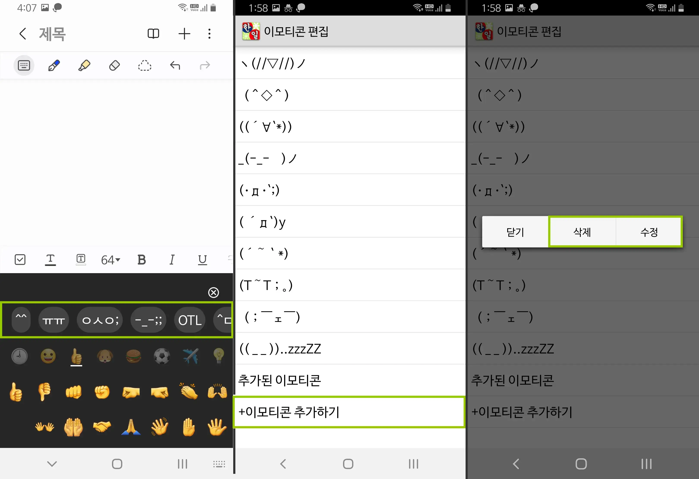
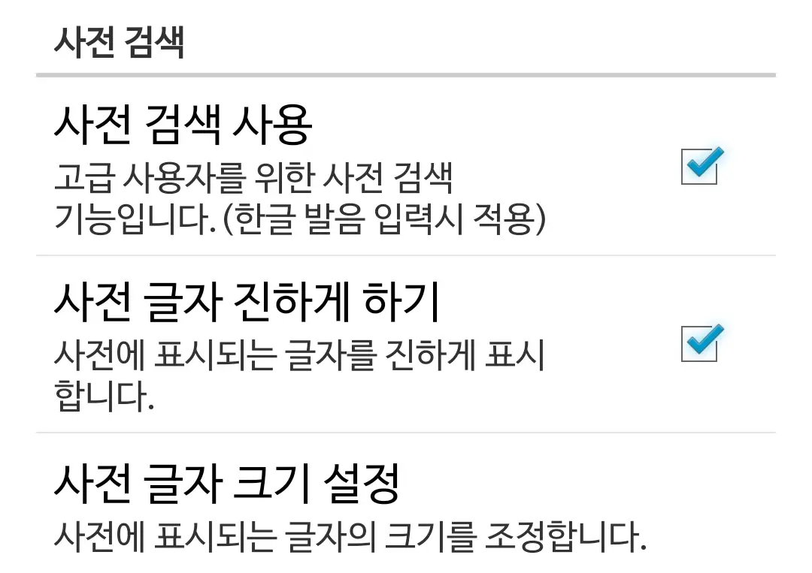
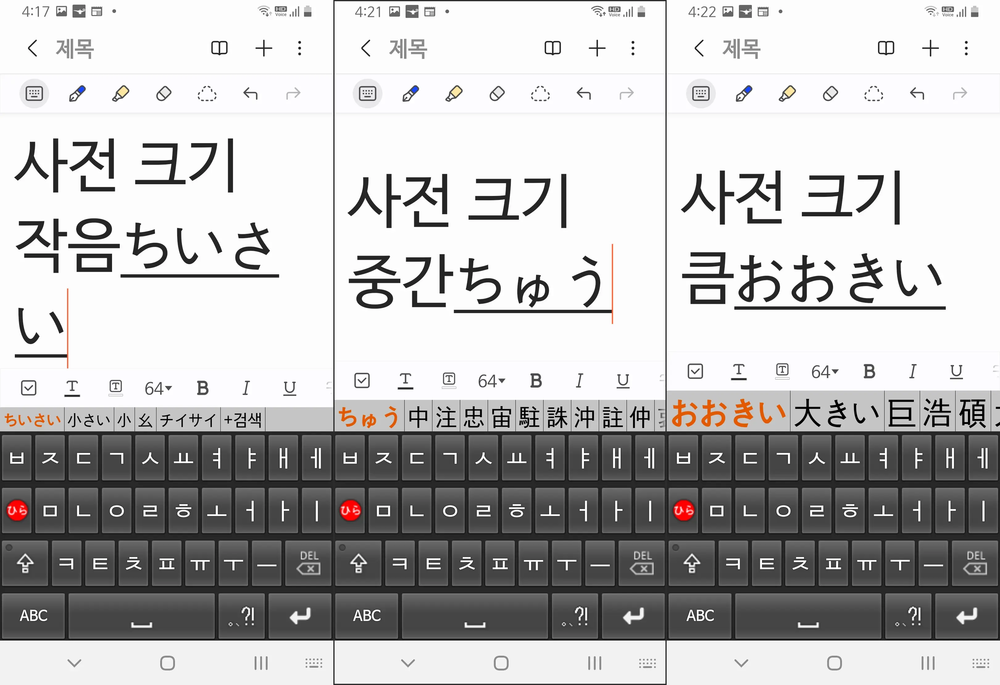

설정을 통해 자신에 맞는 키보드를 만들 수 있습니다.
키보드 설정으로 들어가는 방법
방법 A

안드로이드 설정의
키보드 선택화면에서 키보드를 터치하거나
기종에 따라 한글 발음 키보드 설정이라는 메뉴가 표시됩니다.
기종에 따라 한글 발음 키보드 설정이라는 메뉴가 표시됩니다.
방법 B

키보드 우측 상단의 설정 아이콘을 터치합니다.
키 입력 설정

*키를 누를 때 진동 발생*: 입력 시 진동
*키를 누를 때 소리가 발생*: 입력 시 소리
*Caps Lock 사용*: Shift를 다시 누를 때까지 Shift 기능 유지
*숫자 행 표시*: 키보드 레이아웃 상단에 1~0 숫자 행을 표시합니다.
*키보드 크기 설정*: 키보드의 크기를 조정합니다.
*키보드 변경*: 입력 방법 선택창을 표시합니다.
*키를 누를 때 소리가 발생*: 입력 시 소리
*Caps Lock 사용*: Shift를 다시 누를 때까지 Shift 기능 유지
*숫자 행 표시*: 키보드 레이아웃 상단에 1~0 숫자 행을 표시합니다.
*키보드 크기 설정*: 키보드의 크기를 조정합니다.
*키보드 변경*: 입력 방법 선택창을 표시합니다.
숫자 행 표시

키보드 레이아웃 상단에 1~0 숫자 행을 표시합니다.
키보드 크기 설정

작음, 중간, 큼 사이즈로 변경이 가능합니다.
확장 기능 설정

*일본어로 음성인식 하기*: 일본어 입력모드에서 음성입력 가능
*음성인식시 음성 듣기*: 음성 입력 결과를 읽어줌
*일본어 변환시 음성 듣기*: 변환된 내용을 읽어줌
*일본어 번역시 음성 듣기*: 번역된 내용을 읽어줌
*음성인식시 음성 듣기*: 음성 입력 결과를 읽어줌
*일본어 변환시 음성 듣기*: 변환된 내용을 읽어줌
*일본어 번역시 음성 듣기*: 번역된 내용을 읽어줌
이모티콘 설정

*이모티콘 학습*: 자주 사용되는 이모티콘이 리스트의 상위로 올라갑니다.
*이모티콘 초기화*: 이모티콘을 첫 설치시의 구성으로 초기화 할 수 있습니다.
*이모티콘 편집*: 이모티콘을 편집 할 수 있습니다.
*이모티콘 초기화*: 이모티콘을 첫 설치시의 구성으로 초기화 할 수 있습니다.
*이모티콘 편집*: 이모티콘을 편집 할 수 있습니다.
이모티콘 편집

- 이모티콘은 키보드의 이모지 윗부분에 위치해 있습니다.
- 이모티콘 편집에서는 리스트 하단으로 내리면 이모티콘 추가하기 항목이 있습니다.
- 편집 리스트에서 이모티콘을 길게 터치하면 삭제를 하거나 수정을 할 수 있습니다.
- 이모티콘 편집에서는 리스트 하단으로 내리면 이모티콘 추가하기 항목이 있습니다.
- 편집 리스트에서 이모티콘을 길게 터치하면 삭제를 하거나 수정을 할 수 있습니다.
사전 검색

*사전 검색 사용*: 일본어 모드에서 입력시 변환 가능한 한자를 표시합니다.
*사전 글자 진하게 하기*: 변환 가능한 한자를 표시할때 글자가 진하게 표시합니다.
*사전 글자 크기 설정*: 사전에 표시되는 글자의 크기를 조정합니다.
*사전 글자 진하게 하기*: 변환 가능한 한자를 표시할때 글자가 진하게 표시합니다.
*사전 글자 크기 설정*: 사전에 표시되는 글자의 크기를 조정합니다.
사전 글자 크기 설정

작음, 중간, 큼 사이즈로 변경이 가능합니다.